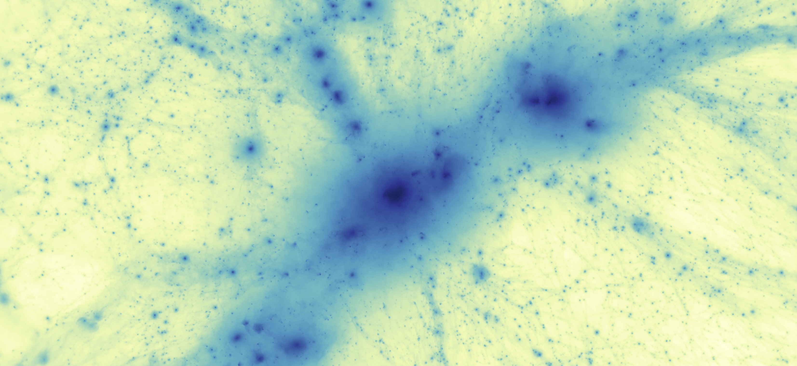
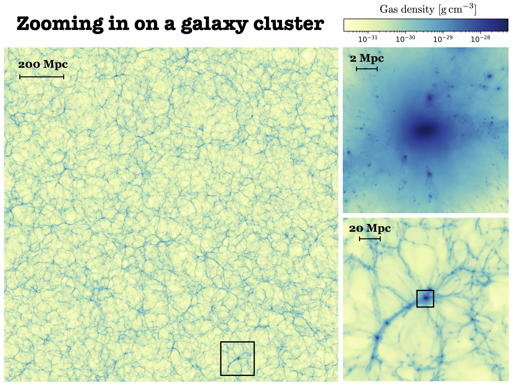

Theoretical astrophysics in Copenhagen
 My name is Thomas Berlok and I am a Marie Skłodowska-Curie Fellow (postdoc)
at the Niels Bohr Institute (NBI),
University of Copenhagen.
My research focuses mostly on astrophysical fluid dynamics and plasma astrophysics. In terms of astrophysical systems, my work so far has primarily been on the dynamics of the intracluster medium in galaxy clusters and on cold streams feeding galaxies with fuel for star formation in the early universe.
My name is Thomas Berlok and I am a Marie Skłodowska-Curie Fellow (postdoc)
at the Niels Bohr Institute (NBI),
University of Copenhagen.
My research focuses mostly on astrophysical fluid dynamics and plasma astrophysics. In terms of astrophysical systems, my work so far has primarily been on the dynamics of the intracluster medium in galaxy clusters and on cold streams feeding galaxies with fuel for star formation in the early universe.
I use computer simulations for much of my work and I am the main developer
of several software packages including Paicos (a GPU-enabled Python package for analysis and visualization of computer simulations, see some example visualizations further down on this page) and
Psecas (a Pseudo-Spectral Eigenvalue Calculator with an Automated Solver, which can be used for calculating the growth rates and eigenmodes of fluid instabilities). I am also the main developer of
the Braginskii viscosity implementation in the moving mesh code Arepo.
During my PhD studies my advisors and I also developed a 2D hybrid-kinetic code for studying ions in
collisionless plasmas (this remains unpublished but details can be found in my PhD thesis which can be downloaded here).
Ongoing research
I am currently working on a new suite of cosmological simulations of galaxy clusters, which has the working title PICO-Cluster. Cosmological simulations start shortly after the Big Bang and capture how matter collapses to form the first galaxies, some of which later assemble in galaxy clusters. This project is a collaboration between NBI, AIP and MPA. We've been awarded 28 mio. cpu-hours of computing time on SuperMuc-NG in Garching. Galaxy clusters form at the largest over-densities in the cosmic web which reveals itself in our 1 Gpc/h box simulation. We have used this box simulation to select 25 galaxy clusters for re-simulation at much higher resolution using a so-called zoom-in technique. This is illustrated in the image below.
Animation gallery
Here I show some of the animations I have made with Paicos, which is a GPU-enabled Python package for analysis and visualization of computer simulations. There are more video links in my publication list.I have created a few animations of the PICO-Cluster simulations, some of which are shown below. The first animation shows the formation of a galaxy cluster and how it undergoes a major merger with a smaller galaxy cluster when the universe is around 10 billion years old. The merger creates bow shocks which heat the gas in the intracluster medium. The second animation uses a higher resolution and takes a closer look at where the shock energy is dissipated (right-hand panel). The third animation gives a 3D view, achieved by rotating the viewing position around the cluster center. This animation was made from roughly 100 mio. gas cells from which I created 2880 images. The GPU capabilities of Paicos enabled me to create this video in a few hours.
In a fourth animation, we will have a look at the galaxies in this galaxy cluster.
I have also made full-screen animations of the time evolution of a massive galaxy cluster, as seen below. In this animation, we see how the gas is heated (upper right), and how turbulence (lower left) amplifies the magnetic field (lower right) in the galaxy cluster.
Finally, I have made animations of some my colleagues' simulations. Below are a couple of examples.
Here is an animation of the galaxy merger simulations described in two papers by my former colleague Joseph Whittingham ( Paper 1, Paper 2): While Paicos was originally intended to work with Arepo simulations only, I have recently extended this code to also work with simulation output from other astrophysical simulation codes.
Below I show an animation of a simulation of a protoplanetary disk. The simulation was performed by Christian Granzow Holm, Michael Küffmeier, Troels Haugbølle and Åke Nordlund using the Dispatch code and the animation was made by me using Paicos.
First author publications
My publications can be found on ADS or via the links below:


Quasi-global simulations of the ICM
Berlok
& Pessah, 2016, ApJ, 833, 2.
On Helium Mixing in Quasi-global Simulations of the Intracluster Medium.
Watch animation of figure 5.